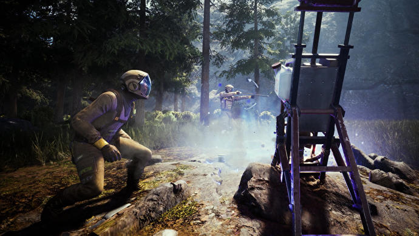

⌨ Premiery gier! ⌨

Tytuł: Solar Ash
Premiera: 2 grudnia 2021
Platformy: PC, PS5, PS4
Wydawca PL: nieznany
Wersja polska: brak informacji
Opis: Studio Heart Machine wyraźnie się rozwija. Po udanym i doskonale ocenionym - ale wciąż dość prostym w kontekście oprawy - Hyper Light Drifter, zespół przygotował Solar Ash, a więc większy projekt, które może przypaść do gustu znacznie szerszej grupie odbiorców. Głównym motywem zabawy jest pozostawanie w ruchu. Bohaterka eksploruje surrealistyczny świat tzw. Pustki, ślizgając się po ziemi, wysoko skacząc, a także jadąc na specjalnych szynach. Jest też walka, przy czym nierzadko wylądujemy na grzbietach ogromnych stworzeń, by poszukać ich słabych punktów.

Tytuł: Century: Age of Ashes
Premiera: 2 grudnia 2021
Platformy: PC
Wydawca PL: nieznany
Wersja polska: brak informacji
Opis: Age of Ashes to jeden z najoryginalniejszych pomysłów końcówki roku, szczególnie że zagramy za darmo, w modelu f2p. Mieliśmy już co prawda gry o powietrznych bitwach samolotów, ale nigdy wariantu ze smokami. W produkcji wcielamy się właśnie w „pilotów” tych wielkich monstrów, walcząc z innymi zawodnikami w drużynach. Na start otrzymujemy trzy zróżnicowane klasy, które używają innych zdolności: np. chmury gazu, pocisków lodowych czy niewidzialności. Do tego kilka trybów, w tym 3vs3 oraz 6vs6 czy wariant wzorowany na „Capture the Flag”. W nowoczesnej grze multiplayer nie mogło zabraknąć rozwiniętych elementów personalizacji. Zdobywanie doświadczenia pozwala na odblokowanie przedmiotów kosmetycznych i skinów zarówno dla smoka, jak i dojeżdżającego bestię wojownika.

Premiera: 4 grudnia 2021
Platformy: PC
Wydawca PL: nieznany
Wersja polska: brak informacji
Nowy projekt twórcy DayZ - kierującego studiem Rocketwerkz Deana Halla - to kooperacyjna gra survivalowa. Przebywający na obcej planecie astronauci walczą o przetrwanie w nieprzyjaznym środowisku. W grupie może znajdować się do ośmiu osób, ale jest też możliwość zabawy w pojedynkę. Kosmiczni eksploratorzy próbują ujarzmić dziki świat, walcząc ze znajdującymi się na powierzchni stworzeniami, a przede wszystkim gromadząc cenne zasoby, z których tworzą ulepszenia i nowy ekwipunek po powrocie do bazy, znajdującej się na orbicie. Za każdym razem jesteśmy ograniczeni czasowo, a przypadku spóźnienia, statek odlatuje na orbitę bez pasażerów. Icarus miał być grą free-to-play, ale Hall zmienił zdanie. Teraz kosztuje ok. 100 zł, a ponadto podjęto decyzję o wydawaniu przygody w oddzielnych rozdziałach.
Tytuł: Icarus
Premiera: 4 grudnia 2021
Platformy: PC
Wydawca PL: nieznany
Wersja polska: brak informacji
Nowy projekt twórcy DayZ - kierującego studiem Rocketwerkz Deana Halla - to kooperacyjna gra survivalowa. Przebywający na obcej planecie astronauci walczą o przetrwanie w nieprzyjaznym środowisku. W grupie może znajdować się do ośmiu osób, ale jest też możliwość zabawy w pojedynkę. Kosmiczni eksploratorzy próbują ujarzmić dziki świat, walcząc ze znajdującymi się na powierzchni stworzeniami, a przede wszystkim gromadząc cenne zasoby, z których tworzą ulepszenia i nowy ekwipunek po powrocie do bazy, znajdującej się na orbicie. Za każdym razem jesteśmy ograniczeni czasowo, a przypadku spóźnienia, statek odlatuje na orbitę bez pasażerów. Icarus miał być grą free-to-play, ale Hall zmienił zdanie. Teraz kosztuje ok. 100 zł, a ponadto podjęto decyzję o wydawaniu przygody w oddzielnych rozdziałach.

Tytuł: Halo Infinite
Premiera: 8 grudnia 2021
Platformy: PC, Xbox Series X/S, Xbox One
Wydawca PL: Microsoft
Wersja polska: brak informacji
Opis: Szósta główna odsłona serii Halo miała być tytułem startowym nowej generacji konsol Microsoftu, ale premierę przełożono na 2021 rok ze względu na krytykę fanów. Czy mimo wszystko Infinite pokaże, na co stać nowy sprzęt? Fabuła kontynuuje wątek z Halo 5: Guardians, przy czym ma być bardziej „ludzka”, skoncentrowana na Master Chiefie. Trafimy na pierścień Halo, a pancerz Mark VI uzyska wygląd zbliżony do tego z drugiej i trzeciej części cyklu. Ponadto twórcy ogłosili, że personalizację postaci wzorują na lubianym przez graczy systemie z Halo Reach. Pojawią się też noszone pod pancerzami czarne kombinezony dla podopiecznych, a osoby, które w piątej części zdobyły maksymalny poziom, w nowej odsłonie otrzymają bonus. Kampanię fabularną można ukończyć samemu lub w trybie współpracy - lokalnej i przez sieć. Nie zabraknie też oczywiście multiplayera.

Tytuł: Five Nights at Freddy's Security Breach
Premiera: 16 grudnia 2021
Platformy: PC, PS5, PS4
Wydawca PL: nieznany
Wersja polska: brak informacji
Opis: Kolejna pełnoprawna odsłona kultowej serii horrorów Five Nights at Freddy's, dość mocno odchodząca od schematów wypracowanych do tej pory przez cykl. Tym razem nie jesteśmy bowiem uziemieni, a możemy poruszać się swobodnie po dość sporej lokacji. Głównym bohaterem jest chłopiec o imieniu Gregory, który w wyniku nieszczęśliwego wypadku zostaje zamknięty na noc w rodzinnym centrum zabawy Fazbear's Mega Pizza Plex. Miejsce opanowane jest przez znane fanom krwiożercze animatroniki, a zadaniem gracza jest przetrwanie do godziny 6:00 rano, kiedy to placówka zostaje otwarta. Należy unikać mechanicznych wrogów, chowając się w licznych zakamarkach, a także podglądając obraz z kamer bezpieczeństwa za pomocą noszonego na ramieniu urządzenia.